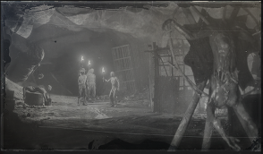
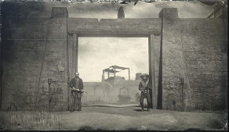
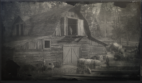
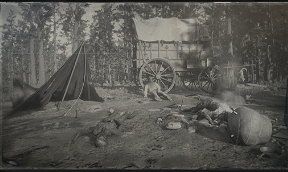
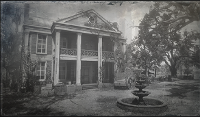

GANGUES

CORJA DOS MURFREES
Um guia informativo sobre a Corja dos Murfrees, uma gangue reclusa conhecida por causar problemas na Gruta dos Castores.

GANGUE DEL LOBOS
Um guia informativo sobre os fora da lei, mercenários e exilados que compõem a gangue Del Lobos.

GANGUE LARAMIE
Um guia informativo sobre a Gangue Laramie, conhecida por intimidar e aterrorizar donos de rancho por dinheiro.

IRMÃOS SKINNER
Um guia informativo sobre os marginais sádicos conhecidos como os Irmãos Skinner.

O'DRISCOLLS
Um guia informativo sobre os O'Driscolls, rebeldes oportunistas que têm gosto por brigas, prostitutas e bebida.


SAQUEADORES DE LEMOYNE
Um guia informativo sobre os Saqueadores de Lemoyne, um grupo de soldados aposentados influenciados politicamente.